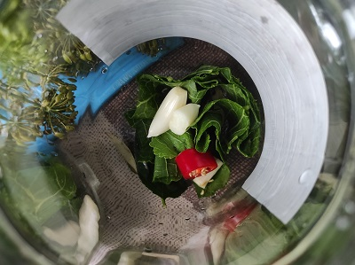

Рецепт хрустящих огурчиов на зиму!
Закатка огурцов – популярная тема во время напряженного периода заготовок на зиму. Так утверждает чудо-повар.ком
Видео-инструкция
Что нужно для супер огурчиков?
- Огурцы
- Приправы
- уксус 9% - 0,5 стакана
- сахар – полстакана
- чеснок измельчённый – 1 ст.л.
- соль – 50 г.
- масло растительное без запаха – полстакана
- перец чёрный молотый – половина чайной ложки
- зонтики укропа – 2 шт.
- список вложенный в список
- вложенный в список
- всё.
- Отсутствие работы
Рецепт
-
Шаг первый
В каждую банку положите зонтики укропа и листики черной смородины. С огурцов отрежьте корешки и хвостики. Наполните огурцами банки до половины. Что касается вопроса подготовки банок, то здесь есть несколько вариантов: стерилизация банок на пару, стерилизация в духовке, либо отказ от стерилизации как таковой. Если вы решите рискнуть и не стерилизовать банки, обязательно помойте их с содой. В данном случае сода подойдет больше, чем моющее средство, так как соду легче смыть со стенок банки, а вот моющее средство может остаться на стенках банки даже после полоскания и в итоге именно из-за него консервация может взорваться.
-
Шаг второй
По средине банки снова положите укроп и листики смородины. Затем заполните огурцами банки доверху.
-
Шаг третий
С самого верху положите листики смородины. Добавьте душистый и черный перец горошком.
-
Шаг четвертый
Если вам всё ёщё интересно загуглите
Результат
Ах, огурчики, мои огурчики Почти готово! Теперь огурчикам надо дать отдохнуть пару дней и можно доставать к столу
Вам также понравится: Как правильно организовать пакет с пакетами